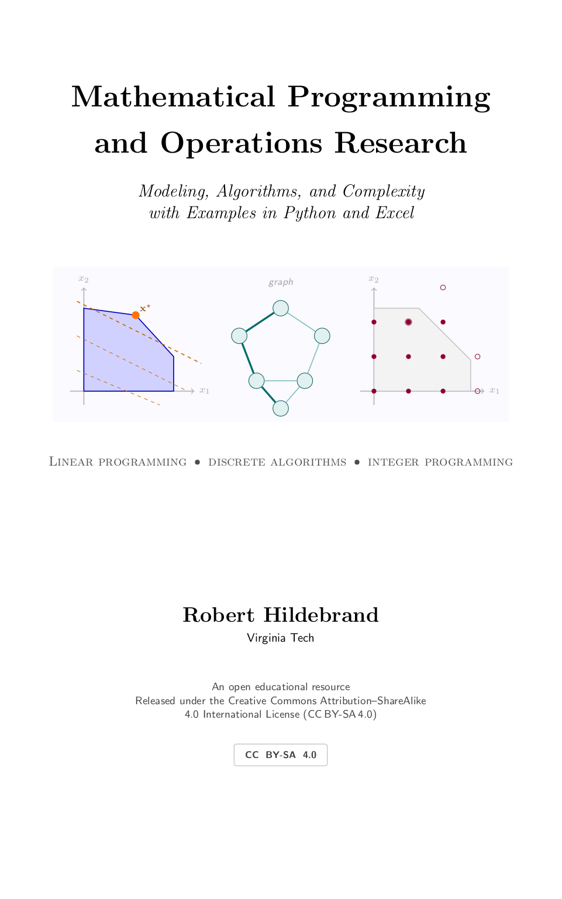

An open textbook on linear programming, discrete algorithms, and integer programming, with worked examples in Excel, Python, and Gurobi, graded exercise ladders with selected solutions, real-world case studies, and interactive visualizations. Designed for the undergraduate courses ISE 2404/3434 — Deterministic Operations Research — at Virginia Tech, and being prepared for publication with Virginia Tech Publishing & Press. Free to read, download, adapt, and share under CC BY-SA 4.0.
📄 Read the PDF
The full print-layout edition (581 pages) — the definitive version.
📖 Download the EPUB
For Apple Books, calibre, Thorium, and Send-to-Kindle. Reflowable, with full math and alt text.
🎲 Interactive visualizations
Simplex pivoting, branch & bound, network flows, sensitivity, and a concept quiz.
🛠️ Source on GitHub
LaTeX source, example notebooks, and the build pipeline.
Just browsing? A basic HTML preview of the chapters is also available — the PDF and EPUB are the polished editions.